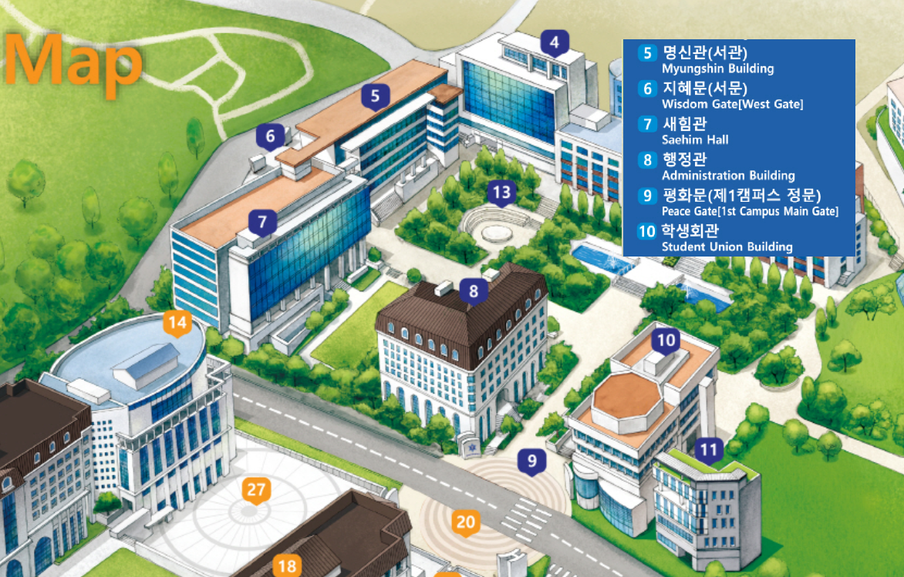

인공지능공학부는 인간 중심의 사고를 바탕으로 창의적 해결책을 모색하는 응용 AI 개발자 양성을 지향합니다. 기술적, 실용적, 사회적 문제에 유연하게 대처할 수 있는 융합형 공학 인재를 목표로 합니다.
3가지 전문 트랙 운영:
졸업 후에는 AI 개발, ICT 서비스, 콘텐츠 개발 등 다양한 분야의 대기업, 연구소 등으로 진출합니다.
지능 정보화 사회에 발맞추어 최신 SW기술과 여성 친화적인 인공지능 전문지식을 교육합니다. 미래 신성장 산업의 핵심인 인공지능 모델링 및 융합 분야에서 요구하는 지능형 소프트웨어 전문 인력을 양성하는 것을 목표로 합니다.
| 구분 | 1학기 | 2학기 |
|---|---|---|
| 1학년 | 인공지능IT기술이해 프로그래밍입문 (Python)(필수) |
공학수학I(필수) 프로그래밍방법론(필수) |
| 2학년 | 공학수학II(필수) 객체지향프로그래밍 (Java)(필수) 컴퓨터아키텍쳐(필수) 데이터구조(필수) 오픈소스프로그래밍(필수) |
웹프로그래밍(캡스톤디자인)(필수) 알고리즘입문 모바일프로그래밍 (Android) 인공지능입문(필수) 데이터베이스 |
| 3학년 | 인공지능과기계학습 컴퓨터그래픽프로그래밍 데이터패턴인식 영상처리와응용 UI/UX |
딥러닝원리와응용 AR/VR게임프로그래밍 네트워크 운영체제원리 센서프로그래밍(캡스톤디자인) |
| 4학년 | 지능형IoT응용(캡스톤디자인) 데이터분석과활용 HCI개론(캡스톤디자인) 클라우드컴퓨팅 졸업프로젝트 |
지능형언어처리 시스템보안 IT소프트웨어공학 컴퓨터비전 졸업프로젝트 |
프로그래밍입문(Introduction to Computer Programming): 파이썬 문법과 의미를 배우고, 프로그래밍의 기본 원리를 습득합니다. IT공학과의 다양한 교과목 이수를 위한 필수 소양을 기릅니다.
인공지능IT기술의이해(Introduction to IT for Artificial Intelligence): AI 기술 이해를 위한 IT의 기본 개념과 원리를 학습하고, AI와 IT의 융합 응용 분야를 탐색합니다.
공학수학I(Engineering Mathematics I): 컴퓨터의 기초가 되는 이산수학과 AI의 초석이 되는 확률과 통계를 학습하여 논리적 사고력을 배양합니다.
프로그래밍방법론(Programming Methodology): C 및 C++ 언어를 통해 객체 지향 개념을 포함한 응용 프로그래밍 방법을 학습하여 실용적인 기반 기술을 다집니다.
공학수학II(Engineering Mathematics II): 컴퓨터 그래픽스, 비전 등 AI 및 IT 주요 분야에 필요한 기본 수학을 학습하고 파이썬 실습을 통해 공학 문제 해결의 토대를 마련합니다.
오픈소스프로그래밍(Open Source Programming): 오픈소스의 역사, 라이센스를 이해하고 Git 등 관리 도구를 익혀 오픈소스 생태계에 기여하는 방법을 학습합니다.
인공지능입문(Introduction to Artificial Intelligence): AI의 기본 개념, 지식 표현, 문제 해결 방법을 학습하여 기계학습과 딥러닝의 기초를 마련합니다.
웹프로그래밍(Web Programming): HTML5, CSS3, Javascript, Node.js 등을 통해 웹 프론트엔드와 백엔드 프로그래밍의 전반을 이해합니다.
알고리즘입문(Multimedia Algorithms): 복잡도 분석, 정렬, 검색 트리, 그래프 알고리즘 등을 통해 효율적인 문제 해결 능력을 배양합니다.
인공지능과기계학습 / 딥러닝원리와응용: 기계학습과 딥러닝의 핵심 이론과 다양한 방법론을 심도 있게 학습합니다.
데이터패턴인식 / 데이터분석과활용: 데이터에서 유의미한 패턴을 찾고 지식을 추출하는 데이터 마이닝 및 분석 기법을 배웁니다.
영상처리와응용 / 컴퓨터비전: 사람의 시각 시스템을 모방하여 컴퓨터가 이미지를 이해하고 해석하는 기술을 학습합니다.
지능형언어처리: 자연어처리(NLP)의 고전적 방법론부터 최신 딥러닝 기반 방법론까지 체계적으로 학습합니다.
시스템보안 / 네트워크 / 운영체제원리: AI 시스템을 안정적으로 운영하기 위한 핵심 컴퓨터 과학(CS) 지식을 습득합니다.
캡스톤디자인 / 졸업프로젝트: 전공 지식을 총동원하여 팀 단위로 실무 프로젝트를 기획, 개발, 관리하며 실전 능력을 함양합니다.
학과의 교육 목표를 이해하고, 자신의 강점과 경험이 학과의 인재상과 어떻게 부합하는지 어필하는 것이 중요합니다.
전공적합성발전가능성 우리 인공지능공학부는 '프로젝트 기반 학습(PBL)'을 통해 산업 현장의 문제 해결 능력을 함양하는 것을 중요하게 생각합니다. 지원자의 생활기록부를 보면 자율주행, 스마트 분리수거 등 다양한 프로젝트 경험이 있는데, 그중 가장 기억에 남는 프로젝트는 무엇이며, 그 경험이 우리 학부의 인재상과 어떻게 부합한다고 생각하나요?
네, 저는 3학년 때 진행했던 '자율주행차의 PID 제어 파라미터 최적화' 프로젝트가 가장 기억에 남습니다. 처음에는 제어공학 이론을 적용하면 쉽게 해결될 것이라 생각했지만, 시뮬레이션 과정에서 계속된 오버슈팅 문제에 부딪혔습니다. 이 문제를 해결하기 위해 팀원들과 함께 손실 함수를 직접 설계하고, 경사 하강법을 적용하여 파라미터를 최적화하는 과정을 거쳤습니다.
이 경험을 통해 이론 학습만으로는 알 수 없는 실제 문제의 복잡성과, 이를 해결하기 위한 창의적인 접근법의 중요성을 깨달았습니다. 이는 숙명여대 인공지능공학부가 추구하는 '프로젝트 기반 학습'의 가치와 정확히 일치한다고 생각합니다. 저는 고교 시절의 작은 성공과 실패 경험을 바탕으로, 입학 후 학부의 체계적인 PBL 커리큘럼 안에서 더 큰 산업적 문제를 해결하는 전문가로 성장하고 싶습니다.
(추가 질문) 우리 학부는 '인공지능 모델링 및 융합 분야'의 인재 양성을 목표로 합니다. 지원자는 AI 기술을 보안, 환경 등 다양한 분야와 연결하는 탐구 활동을 많이 했습니다. 본인이 생각하는 'AI 융합'이란 무엇이며, 앞으로 어떤 분야와 AI를 융합하여 새로운 가치를 만들고 싶은가요?
제가 생각하는 'AI 융합'은 단순히 다른 분야에 AI 기술을 적용하는 것을 넘어, 해당 분야의 도메인 지식을 깊이 이해하고 AI와 결합하여 기존에 없던 새로운 가치를 창출하는 시너지 효과라고 생각합니다. 예를 들어, 단순히 병원 기록을 전산화하는 것은 IT 기술의 활용이지만, 그 기록(데이터)을 AI로 분석하여 질병을 예측하는 것은 진정한 의미의 융합입니다.
저는 고등학교 때 화학과 AI를 융합하여 전해질을 분류하는 탐구를 진행하며 융합 연구의 가능성을 보았습니다. 대학에 진학해서는 특히 'AI 신약 개발' 분야에 도전하고 싶습니다. 화학Ⅱ 시간에 배운 분자 구조와 반응에 대한 지식을 바탕으로, 수많은 화합물 중에서 신약 후보 물질을 빠르고 정확하게 예측하는 AI 모델을 개발하는 연구를 통해 인류의 건강에 기여하고 싶습니다.
기술 이해도응용력 ChatGPT, Claude 등 최근 생성형 인공지능의 발전 방향에 대해 설명하고, 이러한 기술들을 본인이 전공하고자 하는 인공지능 분야에서 어떻게 활용할 수 있을지 구체적인 예를 들어 설명해주세요.
최근 생성형 AI는 텍스트 생성을 넘어 멀티모달(이미지, 음성, 비디오) 처리 능력으로 발전하고 있습니다. ChatGPT의 실시간 음성 대화, Claude의 장기 기억 능력, DALL-E의 정교한 이미지 생성 등이 대표적입니다. 기술적 발전 방향으로는 ▲모델 경량화와 효율성 증대 ▲도메인 특화 모델 개발 ▲실시간 상호작용 능력 강화 ▲안정성과 신뢰성 확보가 있습니다.
이러한 기술들을 활용한 구체적인 예로는 첫째, 한국어 교육 분야에서 맞춤형 작문 코칭 AI를 개발할 수 있습니다. ChatGPT의 실시간 대화 능력을 활용해 학생들의 글쓰기를 즉각적으로 피드백하고, Claude의 분석적 사고를 바탕으로 논리 구조를 개선해 줄 수 있습니다. 둘째, 의료 분야에서는 환자의 증상 설명을 실시간으로 분석하고, 의료 이미지(MRI, CT)를 함께 고려해 정확한 진단을 보조하는 시스템을 구축할 수 있습니다. 셋째, 창작 분야에서는 한국 전통 문양과 현대 디자인을 융합한 콘텐츠를 생성하여 K-컬처의 세계화에 기여할 수 있습니다. 숙명여대에서 이러한 기술들을 심층적으로 학습하여 사회 문제 해결에 실질적으로 기여하고 싶습니다.
윤리 의식문제 해결 능력 인공지능 기술이 특정 산업(의료, 금융, 교육 등)에 실제로 적용될 때 예상되는 기술적 한계와 윤리적 문제점은 무엇이며, 본인이라면 이를 어떻게 해결해 나갈 계획인지 구체적으로 설명해주세요.
의료 산업을 예로 들면, 기술적 한계로는 ▲희귀질환 데이터 부족으로 인한 정확도 저하 ▲환자 개별 차이 반영의 어려움 ▲실시간 상황 대응 능력 부족 등이 있습니다. 윤리적 문제점으로는 ▲의료 데이터의 민감 정보 보호 이슈 ▲AI 진단의 책임 소재 불분명 ▲의사-환자 관계 훼손 가능성 등이 있습니다.
이를 해결하기 위한 구체적인 계획은 첫째, 기술적 해결책으로 연동형 학습(Federated Learning)을 도입해 각 병원의 데이터를 중앙서버 없이 안전하게 공유하고, 전이학습(Transfer Learning)으로 적은 데이터로도 높은 성능을 내는 모델을 개발하겠습니다. 또한 설명 가능한 AI(XAI) 기술을 적용해 진단 근거를 투명하게 제시하겠습니다.
둘째, 제도적 해결책으로 AI 윤리 위원회를 구성해 기술 개발 단계부터 윤리적 검토를 진행하고, 의료법 개정을 통해 AI 진단 보조 시스템의 법적 지위를 명확히 하겠습니다. 또한 의사 재교육 프로그램을 개발해 AI를 도구로 활용하는 능력을 배양하겠습니다.
셋째, 사회적 해결책으로 환자 참여형 데이터 구축 플랫폼을 만들어 데이터 주권을 환자에게 보장하고, AI 진단 결과에 대한 이의신청 절차를 마련하여 투명성을 확보하겠습니다. 숙명여대에서 법학, 경영학 등 타 전공과의 융합 교육을 통해 이러한 복합적 문제 해결 능력을 키우고 싶습니다.
본인의 생활기록부는 AI와 컴퓨터공학에 대한 일관되고 심도 있는 탐구 과정을 보여주는 훌륭한 자료입니다. 각 활동에 대해 '왜 했는지(동기)', '무엇을 했는지(과정)', '무엇을 배우고 느꼈는지(결과)', 그리고 '앞으로 어떻게 발전시킬 것인지(연계/심화)'를 명확히 정리해야 합니다.
진로역량논리적 사고력 3학년 때 진행한 자율주행차의 PID 제어 파라미터 최적화 프로젝트에 대해 설명해주세요. 특히 손실 함수를 직접 정의한 과정이 인상 깊은데, 왜 Min-Max 정규화와 지수 함수를 적용했나요?
네, 해당 프로젝트는 P제어만 사용했을 때 발생하는 오버슈팅, 즉 차량의 진동 현상을 해결하기 위해 시작되었습니다. 안정적인 차선 유지를 위해서는 PID 제어의 세 파라미터(비례, 적분, 미분)를 최적화하는 것이 중요하다고 생각했습니다.
손실 함수를 설계할 때, 단순히 목표 지점과의 오차만 반영하면 안정적인 제어가 어렵다고 판단했습니다. 그래서 제어 시스템의 동적 특성인 '과도 응답'과 '정상 상태'를 모두 고려했습니다. 하지만 각 특성을 나타내는 손실 값들의 스케일이 달라, 이를 그대로 합산하면 특정 손실 값에만 최적화가 치우칠 수 있었습니다. 이 문제를 해결하기 위해 Min-Max 정규화를 사용하여 모든 손실 값을 0과 1 사이로 표준화했습니다.
또한, 지수 함수를 적용한 이유는 오차가 클 때 더 큰 패널티를 부여하기 위함이었습니다. 이를 통해 모델이 초기에 큰 오차를 빠르게 줄여나가도록 유도했고, 결과적으로 더 신속하고 안정적으로 최적의 파라미터에 수렴할 수 있었습니다. 이 과정을 통해 수학적 도구를 공학 문제 해결에 전략적으로 적용하는 경험을 할 수 있었습니다.
진로역량창의성 'AI 기반 스마트 분리수거 분류 프로그램'을 개발한 경험에 대해 말해주세요. 티처블 머신을 사용했다고 했는데, 데이터 수집과 모델 학습 과정에서 겪었던 어려움은 무엇이고 어떻게 해결했나요?
네, 환경 문제에 기술적으로 기여하고 싶다는 생각에 AI 분리수거 프로그램을 개발했습니다. 티처블 머신을 사용해 초기 모델을 만들었는데, 가장 큰 어려움은 '데이터의 다양성 부족'이었습니다. 제가 수집한 데이터는 대부분 깨끗하고 정면에서 촬영된 쓰레기 이미지였습니다. 이로 인해 실제 생활에서 흔히 볼 수 있는, 구겨지거나 오염되거나 다른 각도에서 보이는 쓰레기는 잘 인식하지 못하는 '과적합' 현상이 발생했습니다.
이 문제를 해결하기 위해 두 가지 방법을 사용했습니다. 첫째, 의도적으로 다양한 상태의 쓰레기 이미지를 추가로 수집했습니다. 둘째, '데이터 증강(Data Augmentation)' 기법을 적극적으로 활용했습니다. 기존 이미지를 좌우로 뒤집거나, 임의로 회전시키고, 밝기를 조절하는 등의 처리를 통해 한정된 데이터로도 모델이 다양한 상황에 대응할 수 있도록 학습 데이터의 양과 다양성을 늘렸습니다. 이 과정을 통해 AI 모델의 성능은 데이터의 양뿐만 아니라 '질'과 '다양성'에 의해 크게 좌우된다는 것을 체감할 수 있었습니다.
가치관비판적 사고 '대량살상 수학무기'를 읽고 AI가 양극화를 심화시킬 수 있다고 우려했고, '해킹 윤리'를 읽으며 윤리적 해커의 역할을 탐구했습니다. 본인이 생각하는 '바람직한 AI 개발자'의 모습은 무엇이며, 기술이 사회에 미칠 부정적 영향을 최소화하기 위해 개발자는 어떤 노력을 해야 할까요?
제가 생각하는 '바람직한 AI 개발자'는 단순히 코드를 잘 짜는 기술자를 넘어, 자신의 기술이 사회에 미칠 영향을 깊이 성찰하고 사회적 책임을 다하는 'AI 윤리 설계자'라고 생각합니다.
이를 위해 개발자는 세 가지 노력을 해야 한다고 생각합니다. 첫째, '데이터 편향성'을 항상 경계해야 합니다. AI 모델은 데이터에 담긴 편견까지 학습하기 때문에, 데이터 수집 단계부터 다양성과 공정성을 확보하려는 노력이 필수적입니다. 둘째, '알고리즘의 투명성'을 높여야 합니다. AI의 판단 과정을 사용자가 이해할 수 있도록 돕는 XAI(설명가능 AI) 기술을 적극적으로 도입하여 '블랙박스' 문제를 해결해야 합니다. 셋째, '기술의 오용 가능성'을 예측하고 예방해야 합니다. 자신이 개발한 기술이 악용될 가능성을 미리 생각해보고, 이를 방지할 수 있는 안전장치를 설계 단계부터 고민하는 비판적 자세가 필요합니다. 결국 기술의 발전 방향을 결정하는 것은 사람이므로, 올바른 가치관을 가진 개발자의 역할이 무엇보다 중요하다고 생각합니다.
진로역량응용력 3학년 때 AI를 활용한 '사이버 침입 예측 시스템'을 탐구했습니다. 기존의 정적 보안 시스템, 예를 들어 방화벽과 비교했을 때, AI 기반 보안 시스템이 갖는 가장 큰 장점은 무엇이라고 생각하나요?
네, 기존의 방화벽이나 백신 프로그램 같은 정적 보안 시스템은 주로 이미 알려진 공격 패턴이나 악성코드의 시그니처를 기반으로 작동합니다. 이는 알려진 위협을 막는 데는 효과적이지만, 새롭게 등장하는 '제로데이 공격'이나 변종 악성코드에는 취약하다는 명확한 한계가 있습니다.
반면, AI 기반 보안 시스템의 가장 큰 장점은 '행위 기반 탐지'가 가능하다는 것입니다. 즉, 평소 시스템의 정상적인 상태와 사용자 패턴을 학습한 뒤, 그 패턴에서 벗어나는 '이상 행위'를 탐지하여 알려지지 않은 새로운 위협까지 예측하고 대응할 수 있습니다. 예를 들어, 평소와 다른 시간에 대량의 데이터가 외부로 전송되는 것을 포착하여 랜섬웨어의 초기 증상을 감지하는 식입니다. 이처럼 AI는 알려진 공격을 막는 '방어'를 넘어, 알려지지 않은 공격을 예측하는 '예지'의 영역으로 보안의 패러다임을 바꾸고 있다는 점에서 큰 장점을 갖는다고 생각합니다.
인공지능, 머신러닝, 딥러닝의 차이점을 본인이 이해한 대로 설명해보세요.
네, 저는 세 개념을 포함 관계로 이해하고 있습니다. 인공지능(AI)은 가장 큰 개념으로, 인간의 지능적인 행동을 모방하는 모든 기술을 의미합니다. 머신러닝은 인공지능을 구현하는 한 가지 접근법으로, 기계가 데이터로부터 명시적인 프로그래밍 없이 스스로 학습하는 기술입니다. 마지막으로 딥러닝은 머신러닝의 한 분야로, 인간의 뇌 구조를 모방한 '심층 신경망(Deep Neural Network)'을 사용하여 복잡한 패턴을 학습하는 기술입니다. 제가 진행했던 스마트 분리수거 프로젝트에서 이미지를 분류하기 위해 사용한 기술이 바로 이 딥러닝에 해당합니다.
지도학습, 비지도학습, 강화학습에 대해 각각의 예시를 들어 설명해보세요. (본인의 '스마트 분리수거'는 어떤 학습에 해당할까요?)
지도학습은 '정답'이 있는 데이터를 학습하는 방식입니다. 예를 들어, 제가 진행한 '스마트 분리수거' 프로젝트처럼 '이 이미지는 플라스틱이다'라고 정답(레이블)을 알려주고 학습시키는 것이 지도학습입니다. 스팸 메일 필터링도 대표적인 예입니다.
비지도학습은 정답 없이 데이터 자체의 숨겨진 구조나 패턴을 찾는 방식입니다. 예를 들어, 고객 데이터를 바탕으로 비슷한 성향의 고객 그룹을 묶어주는 '군집화(Clustering)'가 대표적입니다.
강화학습은 '보상'을 통해 학습하는 방식입니다. 에이전트가 특정 행동을 했을 때 '상'을 주거나 '벌'을 주어, 보상을 최대화하는 방향으로 행동을 학습합니다. 바둑을 두는 알파고나, 제가 자율주행 프로젝트의 후속 연구로 제안했던 '최적의 PID 파라미터를 찾아가는 AI'가 강화학습의 좋은 예시가 될 수 있습니다.
과적합(Overfitting)이 무엇이며, 이를 해결하기 위한 방법에는 어떤 것들이 있을까요?
과적합은 모델이 학습 데이터에만 너무 치중하여, 마치 시험 범위의 문제만 외운 것처럼 학습 데이터는 잘 맞추지만 실제 새로운 데이터에 대해서는 성능이 떨어지는 현상을 말합니다. 저 역시 스마트 분리수거 프로젝트 초기에 깨끗한 이미지로만 학습시켰더니, 실제 구겨진 쓰레기를 잘 인식하지 못하는 과적합을 경험했습니다.
이를 해결하기 위한 방법으로는 첫째, 더 많은 데이터를 모으는 것입니다. 둘째, 제가 사용했던 '데이터 증강' 기법처럼 기존 데이터를 변형하여 데이터의 다양성을 확보하는 방법이 있습니다. 셋째, 딥러닝 모델의 경우 '드롭아웃(Dropout)'을 통해 학습 과정에서 의도적으로 일부 뉴런을 비활성화하여 모델이 특정 뉴런에만 의존하지 않도록 할 수 있습니다. 넷째, 모델의 복잡도를 줄이거나 '규제(Regularization)'를 통해 가중치가 너무 커지지 않도록 제한하는 방법도 있습니다.
생활기록부에 sLLM(경량화 모델)에 대해 탐구했다고 나와있는데, 거대언어모델(LLM)에 비해 sLLM이 갖는 장점은 무엇이라고 생각하나요?
네, LLM이 매우 뛰어난 성능을 보이지만, 막대한 컴퓨팅 자원과 비용이 필요하다는 단점이 있습니다. 제가 탐구한 sLLM은 이러한 한계를 극복하기 위해 등장했으며, 크게 세 가지 장점이 있다고 생각합니다. 첫째, '효율성'입니다. 모델 크기가 작아 학습과 추론에 필요한 비용과 에너지가 적습니다. 둘째, '속도'입니다. 빠른 응답 속도가 가능하여 스마트폰이나 노트북 같은 개인 기기에서 직접 AI를 구동하는 '온디바이스 AI'에 매우 적합합니다. 셋째, '맞춤화'입니다. 특정 도메인이나 작업에 맞춰 미세조정(Fine-tuning)하기가 LLM보다 용이하여, 의료나 법률과 같은 전문 분야에서 더 높은 효율을 보일 수 있습니다.
멀티모달 AI가 무엇이며, 이 기술이 우리 삶을 어떻게 바꿀 수 있을지 구체적인 예를 들어 설명해보세요.
멀티모달 AI는 저처럼 사람과 같이 텍스트, 이미지, 음성 등 여러 종류의 데이터를 동시에 이해하고 처리하는 인공지능입니다. 이 기술은 인간과 AI의 상호작용을 훨씬 더 자연스럽게 만들 잠재력이 있다고 생각합니다. 예를 들어, 사용자가 스마트폰 카메라로 고장 난 기계를 비추며 "이게 왜 작동하지 않지?"라고 말하면, AI가 이미지와 음성을 함께 분석하여 "전원 이블이 헐겁게 연결되어 있네요. 다시 꽂아보세요."라고 답변해 줄 수 있습니다. 또한, 교육 분야에서는 시각장애 학생에게 그래프와 도표가 포함된 과학 수업 내용을 음성으로 설명해주거나, 복잡한 수술 과정을 의대생에게 시각 및 음성 자료로 동시에 제공하는 등 정보 접근성을 획기적으로 높여줄 것이라 기대합니다.
최근 가장 인상 깊게 본 AI 관련 뉴스나 기술이 있다면 소개해주세요.
최근 구글에서 발표한 '프로젝트 아스트라(Project Astra)'의 시연 영상이 매우 인상 깊었습니다. 단순히 질문에 답하는 것을 넘어, 스마트폰 카메라를 통해 실시간으로 주변 환경을 보고, 듣고, 기억하며 사용자와 자연스럽게 대화하는 모습이 제가 상상하던 미래의 AI 비서와 가장 가까웠기 때문입니다. 스피커의 부품이 무엇인지 알려주거나, 책상 위에 놓인 물건들을 이용해 즉석에서 이야기를 만들어내는 등, AI가 단순히 정보를 검색하는 도구가 아니라 인간과 소통하고 창의적인 활동을 함께하는 '파트너'가 될 수 있다는 가능성을 보여주었습니다. 이 기술을 보며, 저 또한 사람들의 일상에 자연스럽게 녹아들어 도움을 주는 인간 중심적인 AI를 개발하고 싶다는 꿈을 더욱 확고히 하게 되었습니다.
구글 프로젝트 아스트라(Project Astra) 공식 시연 영상 - 실시간 멀티모달 AI의 미래
면접에서 준비하지 않은 질문이 나와도 답변할 수 있는 STAR 대응법은 STAR 기법 자체가 경험을 구조화하고 체계적으로 설명하는 방법이기 때문에 매우 효과적입니다. STAR는 Situation(상황), Task(과제), Action(행동), Result(결과)의 약자로, 어떤 질문이 나오더라도 자신의 과거 경험을 이 네 가지 요소로 나누어 차분하고 구체적으로 이야기할 수 있도록 도와줍니다. 이 방법은 면접자가 즉석에서 생각을 정리하고 말할 수 있게 하여 긴장된 상황에서도 논리적이고 설득력 있는 답변을 하도록 돕습니다.
STAR는 경험을 효과적으로 설명하는 네 가지 핵심 요소입니다:
예시 질문STAR 적용 "팀 프로젝트에서 갈등이 발생했을 때 어떻게 대처했나요?" 라는 질문에 STAR 기법으로 답변해보세요.
S (상황): 3학년 때 4인 팀으로 스마트 분리수거 AI 프로젝트를 진행했습니다. 프로젝트 마감 2주 전, 팀원들 간의 알고리즘 선택에 대한 의견 차이로 갈등이 심화되었습니다.
T (과제): 저는 팀의 리더로서 프로젝트의 성공적인 완료와 팀원 간의 협력 관계 회복이라는 두 가지 과제를 해결해야 했습니다.
A (행동): 먼저 각 팀원의 의견을 경청하고 각 알고리즘의 장단점을 객관적으로 비교하는 회의를 진행했습니다. 그 후, 작은 규모의 실험을 통해 두 알고리즘의 성능을 실제로 테스트하여 데이터 기반의 의사결정을 제시했습니다. 또한, 최종 결정에 모든 팀원이 동의할 수 있도록 투표를 진행하고 소수 의견도 존중하는 방향을 제안했습니다.
R (결과): 데이터 기반의 합리적인 의사결정 과정을 통해 팀원 모두가 수용하는 해결책을 도출할 수 있었습니다. 결과적으로 프로젝트를 기한 내에 성공적으로 완료했으며, 갈등 해결 과정에서 데이터 기반의 소통 방식과 팀원 참여의 중요성을 배울 수 있었습니다. 이 경험은 이후 다른 팀 프로젝트에서도 갈등 상황을 효과적으로 관리하는 데 큰 도움이 되었습니다.
1. 생각할 시간 요청: 예상치 못한 질문이 나오면 "잠시 생각할 시간을 주시면 감사하겠습니다"라고 정중하게 요청하세요. 15~30초의 시간은 STAR 구조로 답변을 준비하기에 충분합니다.
2. 자신의 경험 연결: 질문과 직접 관련된 경험이 없더라도, 비슷한 상황이나 학습한 원리를 적용하여 답변할 수 있습니다.
3. 구체적 수치 활용: 가능한 한 수치나 결과를 포함하여 답변의 신뢰성을 높이세요. "성능이 30% 향상되었다"처럼 구체적인 결과가 좋습니다.
4. 배운 점 포함: Result 부분에서 단순히 성과뿐만 아니라, 그 경험을 통해 배운 점이나 성장한 부분을 포함하면 더 좋은 인상을 줄 수 있습니다.
5. 연습의 중요성: STAR 기법은 연습을 통해서만 자연스럽게 활용할 수 있습니다. 자신의 경험들을 미리 STAR 구조로 정리해보세요.
면접에서 자신의 경험과 생각을 논리적으로 전달하기 위한 PRICE 답변 공식은 구조화된 커뮤니케이션의 핵심 기술입니다. 이 방식을 통해 자신의 생각을 체계적으로 조직하여 설득력 있고 인상 깊은 답변을 할 수 있습니다.
인공지능학부 적합성진로동기 Q: 우리 인공지능공학부에 지원한 동기는?
전공적합성문제해결 Q: 본인의 프로젝트 중 가장 어려웠던 점과 해결 과정은?
기술적 역량미래 계획 Q: 본인이 생각하는 AI 개발자로서의 강점은?
1. 자연스러운 흐름: 각 요소를 강조하되, 기계적으로 나열하기보다는 자연스러운 이야기처럼 연결하세요.
2. 구체적 수치 포함: Instance 부분에서는 "90% 정확도", "70% 개선"처럼 구체적 수치를 포함하여 신뢰성을 높이세요.
3. 진솔한 경험: 자신의 실제 경험을 바탕으로 답변하여 진정성과 설득력을 확보하세요.
4. 학부와의 연계: Expand 부분에서는 반드시 숙명여대 인공지능학부의 특성과 연계하여 미래 계획을 제시하세요.
5. 시간 조절: 각 요소를 균형 있게 배분하여 전체 답변 시간을 2-3분 내외로 조절하세요.
즉답 능력응용력 Q: 최신 AI 기술 중 가장 주목하는 기술과 그 이유는?
면접에서 언급된 전문용어들을 쉽게 이해할 수 있도록 친절하게 설명해 드립니다. 각 용어의 기본 개념부터 실제 활용 사례까지 체계적으로 정리했습니다.
쉬운 설명: 구글에서 만든 초보자용 AI 학습 도구로, 코딩 없이 이미지, 소리, 움직임을 분류하는 AI 모델을 만들 수 있습니다.
비유: AI를 가르치는 '미술 학습지' 같은 것입니다. 아이들에게 동물 그림을 보여주며 "이건 사자", "이건 호랑이"라고 가르치듯, 컴퓨터에게 이미지를 보여주며 분류를 가르칩니다.
작동 방식:
활용 사례: 생활기록부의 '스마트 분리수거 프로그램'에서 쓰레기 종류를 분류하는 모델을 만들 때 사용했습니다.
쉬운 설명: 적은 양의 데이터를 가지고 더 많은 데이터처럼 만들어주는 기술입니다.
비유: 한 장의 사진을 '사진 편집 앱'으로 여러 버전으로 만드는 것과 같습니다. 좌우로 뒤집고, 회전하고, 밝기를 조절해서 여러 장처럼 보이게 하는 기술입니다.
주요 기법:
왜 필요한가: AI 모델이 깨끗한 이미지만 보고 학습하면, 실제 현실의 구겨지거나 기울어진 쓰레기는 인식하지 못하는 '과적합' 문제가 발생합니다. 데이터 증강을 통해 다양한 상황에 대비할 수 있습니다.
쉬운 설명: AI가 학습 데이터에만 너무 익숙해져서 새로운 데이터를 잘 처리하지 못하는 현상입니다.
비유: 시험 범위의 문제만 달달 외운 학생이 실제 시험에서 응용 문제를 틀리는 것과 같습니다. 교과서 예제는 완벽하게 풀지만, 약간 다른 문제가 나오면 해결하지 못하는 상태입니다.
발생 원인:
해결 방법:
쉬운 설명: 거대언어모델(LLM)을 작고 가볍게 만든 버전으로, 적은 컴퓨터 자원으로도 작동할 수 있습니다.
비유: 거대 백과사전 전체(LLM)와 휴대용 요약본(sLLM)의 관계와 같습니다. 휴대용은 전체 내용을 다 담지는 못하지만, 핵심 정보를 빠르고 가볍게 찾아볼 수 있습니다.
장점:
활용 분야: 스마트폰 앱, 스마트 스피커, 자동차 내비게이션 등 개인 기기에서 실시간으로 작동하는 AI에 사용됩니다.
쉬운 설명: 자율주행차나 로봇이 목표 값을 정확하게 따라가도록 제어하는 가장 기본적인 제어 방법입니다.
비유: 자동차를 일정한 속도로 유지하는 '크루즈 컨트롤'과 같습니다. 속도가 느리면 엑셀을 밟고(P), 너무 빠르면 브레이크를 밟으며(D), 지속적인 속도 차이를 보정합니다(I).
PID 각 요소의 의미:
실제 적용: 자율주행차의 차선 유지, 드론의 자세 제어, 공장 로봇 팔의 정밀 제어 등에 사용됩니다.
쉬운 설명: 목표 지점을 지나쳐 버리는 현상으로, PID 제어에서 흔히 발생하는 문제입니다.
비유: 엘리베이터를 타고 5층으로 가는데, 너무 빨리 가다가 5층을 지나쳐서 6층까지 갔다가 다시 내려오는 것과 같습니다.
자율주행차의 경우:
해결 방법:
쉬운 설명: AI가 얼마나 잘하고 있는지(또는 못하고 있는지)를 수치로 나타내는 함수입니다.
비유: 학생의 시험 점수와 같습니다. 점수가 낮을수록(손실이 클수록) 더 공부해야 하고, 점수가 높을수록(손실이 작을수록) 잘하고 있는 것입니다.
역할:
생활기록부 예시: 자율주행 프로젝트에서는 '오버슈팅'과 '안정성'을 동시에 고려한 복합적인 손실 함수를 설계했습니다.
쉬운 설명: 서로 다른 단위의 데이터를 0에서 1 사이의 동일한 척도로 변환하는 기술입니다.
비유: 키(180cm)와 몸무게(75kg)를 직접 비교할 수 없듯이, 두 데이터를 0-100점 척도로 변환해서 비교하는 것과 같습니다.
계산 방법:
활용 이유: 자율주행 프로젝트에서는 '오버슈팅'과 '정상 상태 오차'의 단위가 달랐기 때문에, Min-Max 정규화로 두 값을 같은 중요도로 비교하고 최적화했습니다.
쉬운 설명: 인터넷 서버가 아닌, 스마트폰이나 개인 기기에서 직접 작동하는 AI 기술입니다.
비유: 모든 계산을 서버 컴퓨터에 의존하는 '클라우드 AI'는 모든 질문을 구글에 검색하는 것과 같고, '온디바이스 AI'는 내 머릿속으로 바로 답을 생각하는 것과 같습니다.
장점:
실제 예시:
쉬운 설명: 이미 학습된 AI 모델의 지식을 새로운 문제에 활용하는 기술입니다.
비유: 자전거를 배운 사람이 오토바이를 더 쉽게 배우는 것과 같습니다. 균형 감각이라는 기본 기능이 이미 있기 때문에 새로운 운전 기술을 더 빨리 익힐 수 있습니다.
작동 원리:
장점: 데이터가 부족한 소규모 프로젝트나 특수 분야에서도 AI를 효과적으로 적용할 수 있습니다.
쉬운 설명: 데이터를 중앙 서버로 모으지 않고, 각 기기에서 개별적으로 학습한 후 결과만 합치는 방식입니다.
비유: 각 학교에서 학생들이 공부하고, 시험 결과만 교육청에 보내서 전체 교육 방향을 정하는 것과 같습니다. 학생들의 개인 정보는 각 학교에 보호된 채로 유지됩니다.
핵심 가치: 개인정보 보호
활용 사례: 스마트폰 키보드의 예측 기능, 병원 간 AI 진단 모델 개발 등에서 사용됩니다.
쉬운 설명: 특정 분야에 대한 깊은 이해와 전문성을 의미합니다.
비유: AI 개발자라는 '요리사'가 있을 때, 의료 AI를 만들려면 '의학'이라는 '레시피'를 알아야 합니다. 의학 지식이 없는 요리사는 좋은 의료 AI를 만들 수 없습니다.
중요성:
AI 개발자에게 필요한 이유: 단순히 코딩만 잘해서는 좋은 AI를 만들 수 없고, AI가 적용될 분야에 대한 깊은 이해가 필요합니다.
쉬운 설명: AI가 최적의 답을 찾아가는 가장 기본적인 최적화 방법입니다.
비유: 안개가 낀 산에서 가장 낮은 곳(최적의 답)을 찾아 내려가는 것과 같습니다. 현재 위치에서 어떤 방향이 아래인지 확인한 후, 한 걸음 내려가고, 다시 방향을 확인하고 또 내려가는 과정을 반복합니다.
작동 과정:
AI 학습에서의 역할: 손실 함수의 값을 최소화하는 최적의 파라미터를 찾는 데 사용되는 핵심 알고리즘입니다.
면접 이틀 전, 최종적으로 점검해야 할 사항들을 정리했습니다. 각 항목을 꼼꼼히 확인하고, 접혀있는 상세 내용을 펼쳐보며 마지막 준비를 완벽하게 마치세요.
신분증/수험표: 가장 중요합니다. 미리 가방에 넣어두세요. 분실에 대비해 사본을 찍어두거나, 정부24 앱 등을 활용하는 것도 좋습니다.
복장: 너무 튀지 않는 단정한 옷차림이 좋습니다. 교복을 입는다면 깨끗하게 세탁하고, 정장을 입는다면 구김이 없도록 미리 준비합니다. 새 옷이나 새 신발은 불편할 수 있으니 익숙한 것으로 착용하는 것을 추천합니다.
전자기기: 스마트워치, 스마트폰, 태블릿 등 모든 전자기기는 면접장 입실 전에 전원을 꺼야 합니다. 알람이 울리지 않도록 반드시 확인하세요.
"면접은 나를 평가하는 자리가 아니라, 나와 학교가 서로를 알아가는 자리다"라고 생각해보세요. 내가 이 학교와 잘 맞는지 확인하러 간다고 생각하면 부담이 줄어듭니다.
심호흡: 너무 긴장될 때는 잠시 눈을 감고, 코로 4초간 숨을 들이마시고, 4초간 참고, 입으로 6초간 천천히 내쉬는 복식 호흡을 해보세요. 심박수가 안정되며 긴장이 완화됩니다.
성공 경험 떠올리기: 고등학교 생활 중 무언가를 성공적으로 해냈던 경험(프로젝트 완성, 성적 향상 등)을 떠올리며 자신감을 되찾으세요.
1분 자기소개 예시:
"안녕하십니까, 기술로 세상의 문제를 해결하는 따뜻한 AI 개발자를 꿈꾸는 지원자 OOO입니다. 저는 고등학교 3년간 AI의 무한한 가능성을 탐구하며, 특히 자율주행 알고리즘과 스마트 분리수거 시스템을 직접 설계하며 이론을 현실로 만드는 즐거움을 깨달았습니다. 복잡한 수학 원리를 코드로 구현하고, 데이터 속에서 의미를 찾아내 문제를 해결하는 과정은 저에게 큰 성취감을 주었습니다. 이제 숙명여대 인공지능학부의 체계적인 커리큘럼 속에서 저의 잠재력을 폭발시켜, 사람을 먼저 생각하는 AI 전문가로 성장하고 싶습니다. 저의 열정과 가능성을 믿고 지켜봐 주시면 감사하겠습니다."
마지막 할 말 예시:
"오늘 면접을 통해 제가 지난 3년간 품어온 AI에 대한 열정과 비전을 보여드릴 수 있어 기뻤습니다. 저는 단순히 지식을 쌓는 것을 넘어, 제가 배운 기술로 사회에 어떤 기여를 할 수 있을지 항상 고민하는 학생이었습니다. 만약 숙명여대 인공지능학부에 입학할 기회가 주어진다면, 선배님 및 동기들과 적극적으로 교류하며 함께 성장하고, 주어진 커리큘럼 외에도 능동적으로 새로운 기술을 탐구하여 빛나는 인재가 되겠습니다. 귀교와 함께 성장할 기회를 꼭 잡고 싶습니다. 감사합니다."
AI > 머신러닝 > 딥러닝: AI는 인간 지능 모방 기술 전체, 머신러닝은 데이터 기반 학습, 딥러닝은 인공신경망 기반 머신러닝.
지도학습: 정답(Label) 있는 데이터로 학습 (예: 스팸메일 분류).
비지도학습: 정답 없는 데이터에서 패턴 찾기 (예: 고객 그룹핑).
강화학습: 보상을 통해 최적 행동 학습 (예: 알파고).
과적합: 학습 데이터에만 과하게 최적화되어 새 데이터에 대한 성능이 낮은 현상.
해결방안: 데이터 증강, 드롭아웃, 규제(Regularization), 더 많은 데이터 확보 등.
※ 'AI 전공 질문' 탭에서 다른 질문들도 다시 한번 확인해보세요!
면접일: 2025년 11월 22일 (토)
필수 지참물: 신분증, 수험표
복장 규정: 교복 및 개인정보(출신고교 등) 확인이 가능한 복장 착용 금지 (블라인드 면접)
전공별 면접 대기실 및 시간표:
| 조 | 교시 | 입실 가능시간 | 입실 완료시각 | 시작 수험번호 | 끝 수험번호 | 면접 대기실 |
|---|---|---|---|---|---|---|
| A | 1교시 | 08:00~08:30 | 8:30 | 371220002 | 371220029 | 명신관 525호 |
| 2교시 | 13:20~13:40 | 13:40 | 371220033 | 371220052 | ||
| B | 1교시 | 08:00~08:30 | 8:30 | 371220053 | 371220085 | |
| 2교시 | 13:20~13:40 | 13:40 | 371220087 | 371220117 |
※ 본인의 수험번호에 해당하는 면접 시간과 대기실을 반드시 다시 한번 확인하세요.
절대 반입 금지 물품:
휴대폰, 스마트워치, 태블릿, 이어폰, 전자담배, 보조배터리 등 모든 종류의 전자기기
중요 유의사항:
- 입실완료시각까지 해당 대기실에 입실하지 못하면 면접 응시에 제한을 받을 수 있습니다.
- 학부모 및 외부인 교내 출입 통제, 학부모 대기실 없음.
- 교내 주차장 이용 절대 불가. 대중교통 이용 필수.
숙명여자대학교 입학처: http://admission.sookmyung.ac.kr
인공지능공학부 홈페이지: (학과 홈페이지 주소를 확인하여 추가하세요.)
면접 요강: 입학처 홈페이지에서 수시모집요강을 다시 한번 다운로드하여 본인의 전형, 면접 시간, 장소, 유의사항을 최종 확인하세요.
교통편: 지각은 절대 금물입니다. 대중교통 이용 시, 예상 소요시간보다 30분~1시간 정도 여유를 두고 출발 계획을 세우세요. 비상 상황에 대비한 대체 경로도 파악해두면 좋습니다.

▲ 숙명여자대학교 제1캠퍼스 건물 배치도 (5번 건물이 명신관)
면접은 정답을 맞히는 시험이 아니라, 자신이 얼마나 이 전공에 적합하고 열정적인 인재인지 보여주는 대화입니다.
자신감을 가지고, 자신의 경험과 생각을 진솔하게 이야기한다면 분명 좋은 결과가 있을 것입니다. 행운을 빕니다!